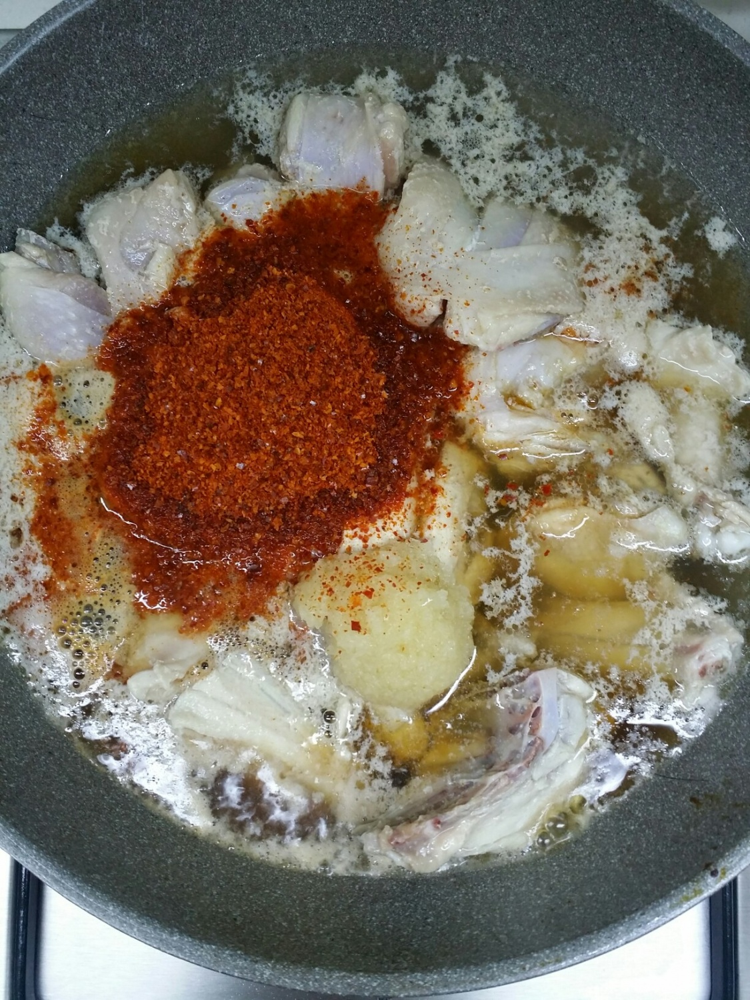

Ingredients
주 재료
- 물3종이컵
- 닭1마리
- 고구마1/2개
- 당면1줌
양념
- 설탕2큰술
- 맛술2큰술
- 다진마늘2큰술
- 간장6큰술
- 고추가루+청양고추가루5큰술
- 꽃소금조금
Steps
- 당면을 불려줍니다.
- 고구마는 너무 두껍지 않게 잘라줍니다.
- 물3종이컵, 닭도리탕용 닭,설탕,맛술,간장,고추가루,다진마늘을 넣고 중불에서 30분여 끓여줍니다.

- 고구마를 넣고 중불에서 10분여 끓여줍니다.
- 불린 당면을 넣고 당면이 익을 때까지 끓여줍니다. 이때 간을보아 부족한 간은 소금으로 해줍니다. 저는 꽃소금 0.5티스푼 넣었습니다.